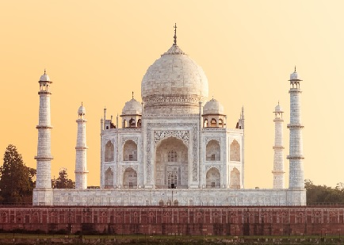
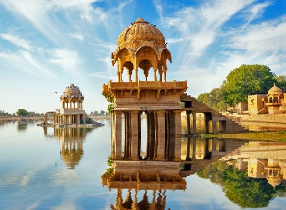

Best Tourist Places In India
15 Top-Rated Tourist Attractions in India,
India is a vibrant land of startling contrasts where both the traditional and modern worlds meet. The world's seventh largest nation by area and the second largest in terms of population, India boasts a rich heritage that's the result of centuries
of different cultures and religions leaving their mark.
Things to do for travelers include the opportunity to experience an array of sacred sites and spiritual encounters, while nature lovers will enjoy its sun-washed beaches, lush
national parks, and exciting wildlife sanctuaries. From the magnificent Taj Mahal in Agra to the holy sites of Harmandir Sahib (formerly the Golden Temple) in Amritsar and the Mecca Masjid mosque in Hyderabad, visitors to this exotic country
will discover a trove of spiritual, cultural, and historical treasures.
1. The Taj Mahal, Agra
Perhaps India's most recognizable building, the Taj Mahal is also the world's most famous testimony to the power of love. Named after Mumtaz Mahal, the favorite wife of Emperor Shah Jahan, this most beautiful of mausoleums was begun upon her death in 1631 and took 20,000 workmen until 1648 to complete. Incorporating many elements of Islamic design including arches, minarets, an onion-shaped dome, and black calligraphy inlaid around the entrance, the Taj Mahal is largely constructed of white marble decorated with delicate inlaid floral patterns and precious and semi-precious stones such as jade, lapis lazuli, diamonds, and mother of pearl.
2. The Holy City of Varanasi

A major pilgrimage center for Hindus, the holy city of Varanasi has long been associated with the mighty Ganges River, one of the faith's most important religious symbols. Dating back to the 8th century BC, Varanasi is one of the oldest still inhabited cities in the world. It offers many reasons to visit, not least of them the chance to explore the Old Quarter adjacent to the Ganges where you'll find the Kashi Vishwanath Temple, built in 1780 (the New Vishwanath Temple with its seven separate temples is also of interest).
3. Harmandir Sahib: The Golden Temple of Amritsar

Founded in 1577 by Ram Das, Amritsar is an important hub of Sikh history and culture. The main attraction here is Harmandir Sahib, opened in 1604 and still often referred to as the Golden Temple for its beautiful gold decoration. The holiest
of India's many Sikh shrines (it also attracts many Hindus and people of other faiths), the temple was built in a blend of Hindu and Islamic styles, its lower marble section featuring such flourishes as ornate inlaid floral and animal
motifs, while the large golden dome represents a lotus flower, a symbol of purity to Sikhs.
In addition to its splendid design, visitors are equally impressed with the temple's spiritual atmosphere, an effect enhanced by the prayers
continuously chanted from the Sikh holy book and broadcast throughout the complex. Part of the overall experience-and visitors are welcome to participate-is the chance to enjoy one of the 50,000 free meals the attraction serves up
to visitors each and every day.
4. The Golden City: Jaisalmer
The yellow sandstone used in most of its buildings, the Golden City of Jaisalmer is an oasis of splendid old architecture that rises from the sand dunes of the Thar Desert. Once a strategic outpost, today the city is filled with splendid
old mansions, magnificent gateways, and the massive Jaisalmer Fort-also known as the Golden Fort-a daunting 12th-century structure that rises high above the town. In addition to its palaces, temples, and fine old homes, the fortress
boasts 99 bastions along with massive gates leading to its main courtyard where you'll find the seven-story-tall Maharaja's Palace. Started in the early 1500s and added to by successive rulers right up until the 19th century,
the palace offers sections open to the public including areas beautifully decorated with tiles from Italy and China, and intricately carved stone doors, as well as a number of Jain temples dating from the 12th to 16th centuries,
each decorated with fine marble and sandstone images, palm-leaf manuscripts, and brightly painted ceilings.
5. Rishikesh
Rishikesh has been on the radar for spiritually minded travelers since the late 1960s, when the Beatles spent time in Maharishi Mahesh Yogi's ashram—now an abandoned site that has become an off-the-beaten-path tourist attraction for fans. The town is nestled in the foothills of the Himalayas on the banks of the holy Ganges River, and serves as a center for yoga and pilgrimages. Take part in the action, or just enjoy the sounds of the temple bells and sightseeing from Rishikesh's two suspension bridges, often guarded by assertive families of monkeys. Keep your distancel.
6. Kerala

Head south of Goa, and you'll trade beaches for tranquil backwaters in Kerala. Nothing beats the experience of hopping aboard a traditional thatched-top houseboat in Alleppey (also known as Alappuzha) and slowly floating through palm-fringed lagoons and rivers, either as a day trip or overnight adventure. You'll enjoy freshly cooked Indian cuisine on the water and breathtakingly beautiful natural sights and wildlife. Easygoing Kerala is like a breath of fresh air from the intensity of cities like New Delhi and Jaipur up north. Schedule some time here when you're in need of a break from the chaos.